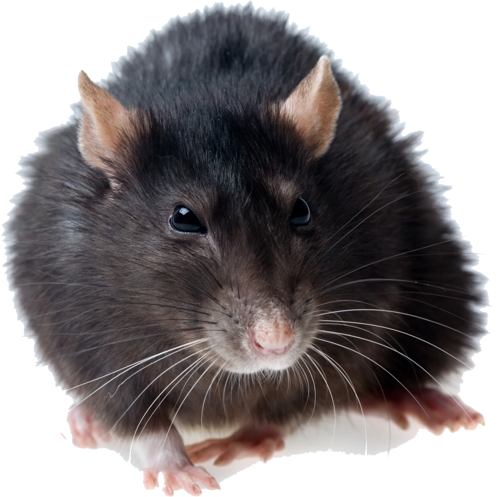

Szczur – agresywny brudas żyjący w krwiożerczych grupach, roznoszący choroby i obdarzony łysym ogonem – słowem paskuda. Wielu ludzi do dziś ma takie zdanie o szczurach, a przecież nie jeden człowiek zawdzięcza im życie i zdrowie. W takim razie jakie są naprawdę te zwierzęta? Z czego wynika ich obecny wizerunek i jakim zmianom ulegał przez wieki? Jak się zachowują i z jakimi wymaganiami wiąże się ich hodowla?